Aluminium hulls
Made for New Zealand water and beach launches, with structure that feels solid under your feet.
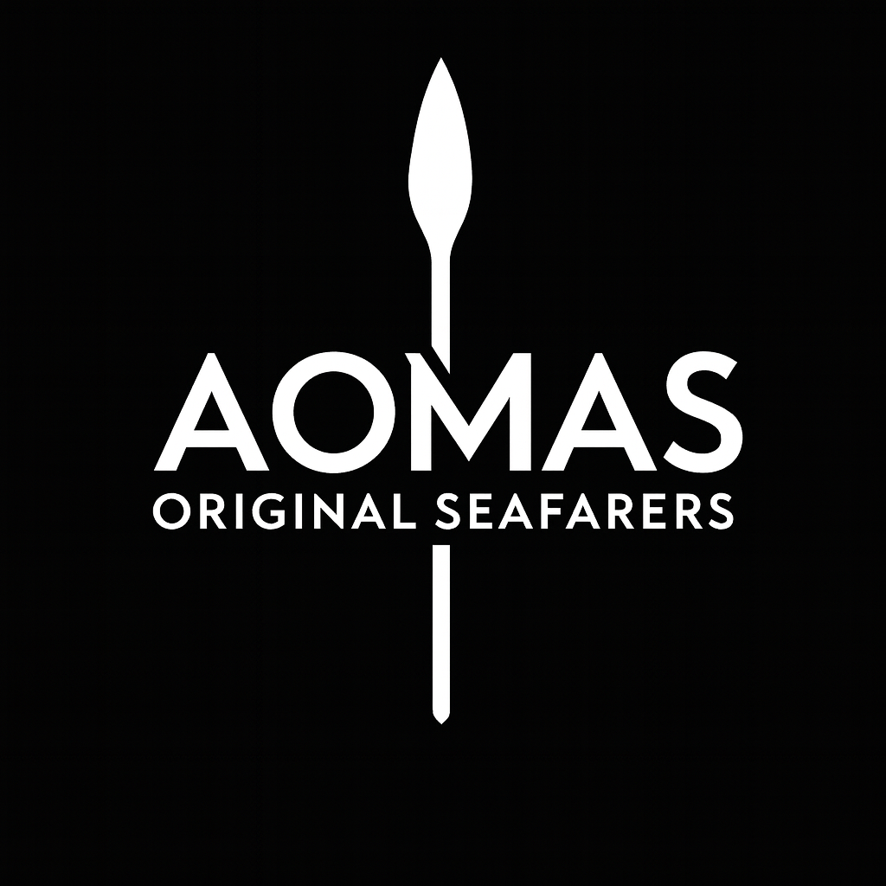
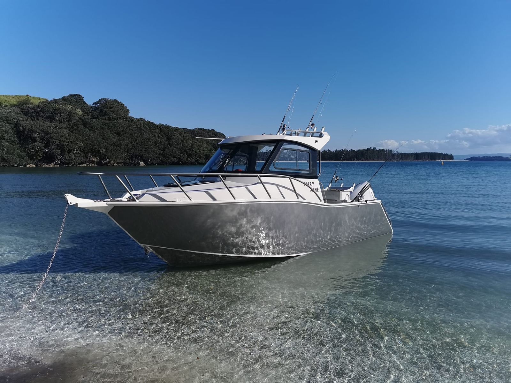
New Zealand custom aluminium boats
AOMAS creates tough, tidy, fully customisable boats for fishing missions, family escapes, and those very serious trips where someone definitely remembered the bait.
AOMAS approach
Choose the boat around the way you actually use it. Long fishing days, quick family runs, dive gear, extra seating, a cabin that feels civilised, or storage that stops everything rolling into one corner.
Every choice has a job. It should feel solid, look clean, and make you slightly smug when another boat at the ramp is still looking for its bung.
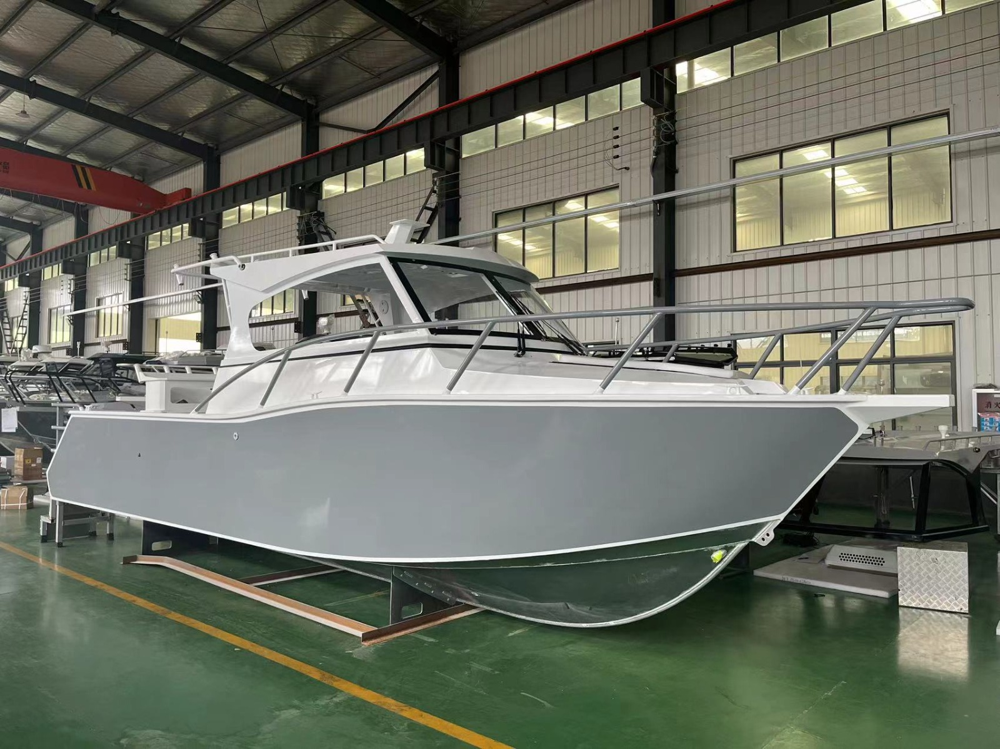
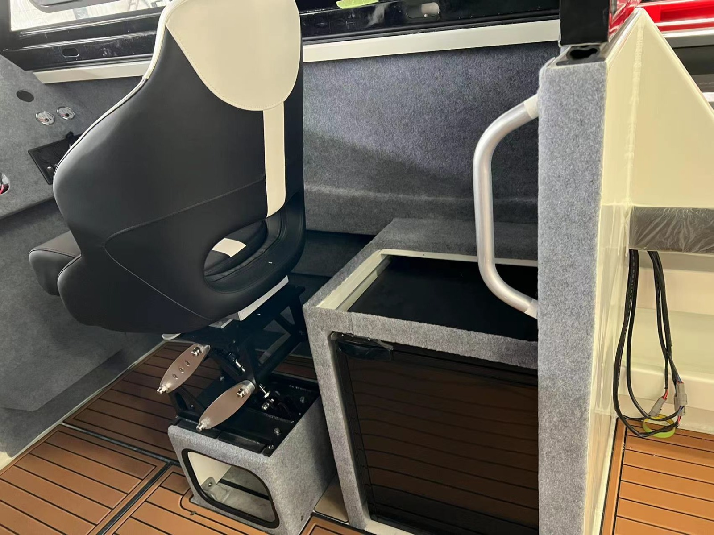
Made for New Zealand water and beach launches, with structure that feels solid under your feet.
Storage, seating, bait boards, rod holders, and walkways placed where your crew actually needs them.
Shelter, seating, lining, windows and small details that make longer days easier.
From the first design sketch to the finished floor, the boat can adapt to the way you use it.
Finished details
The nice bits are not just for photos. Flooring, seating, storage and cabin trim are chosen for comfort, clean up, and the kind of pride that makes you take one more photo at the ramp.
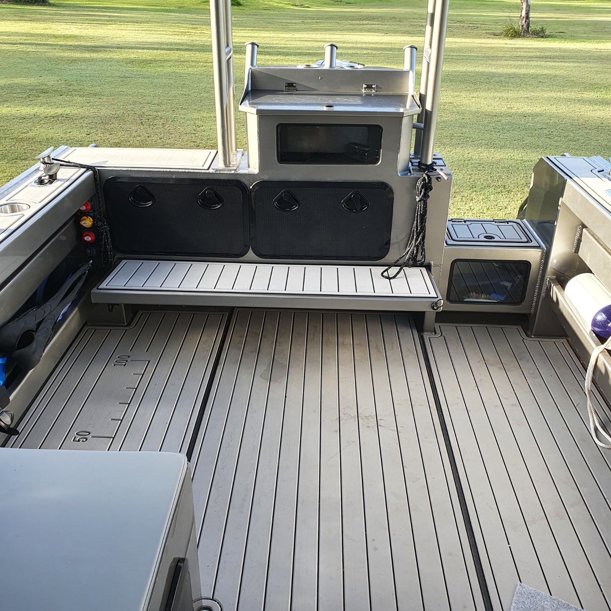
Deck fitout
Customisation
Bring the wish list. We can shape the deck, cabin, seating, flooring colour, fishing gear, trailer setup, and practical extras around how you actually spend time on the water.
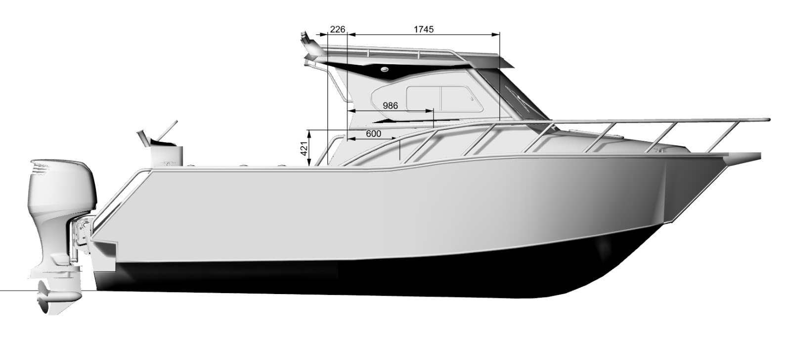
The build can begin from a clear side profile, then move into the real choices: cabin height, work space, seating, deck finish, and the hardware that saves you from awkward boat yoga.
Floor finishes
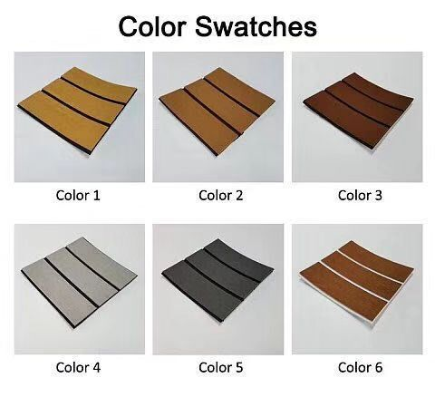
Build process
Manufacturing photos are tucked here for the curious. Open them when you want to see the bones of the boat before the shiny bits arrive.
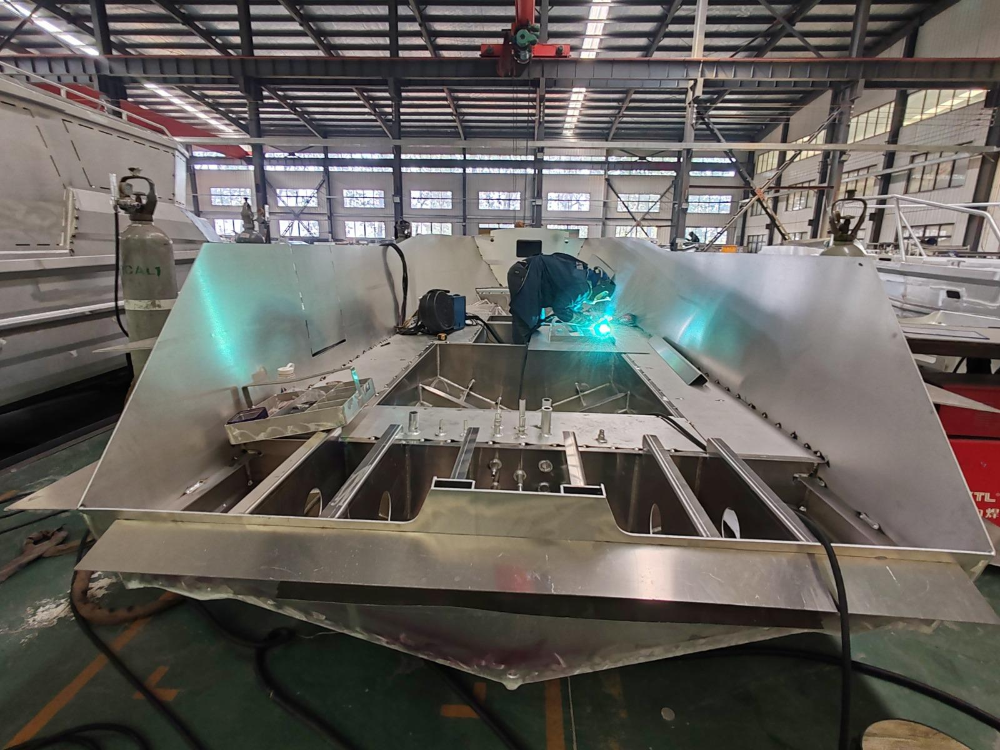
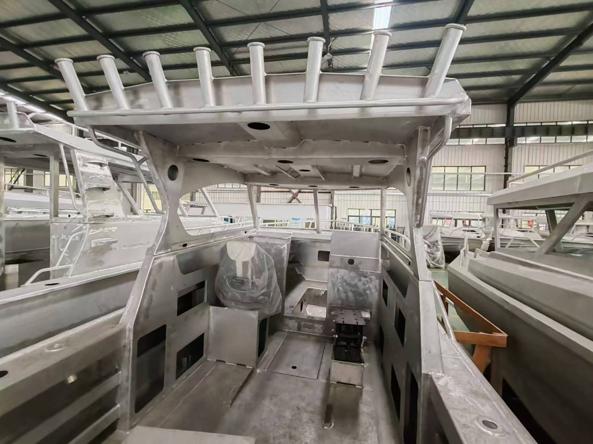
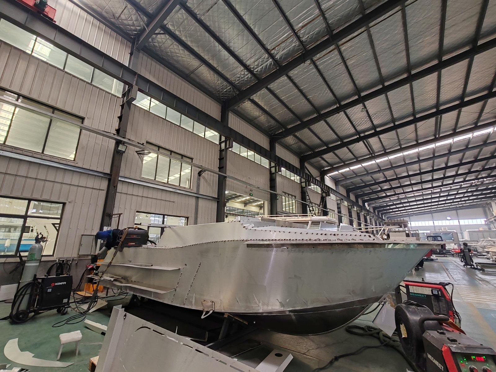
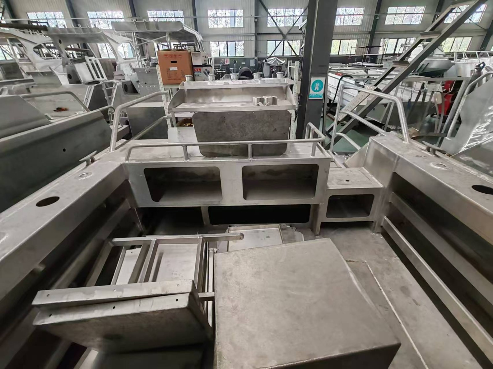
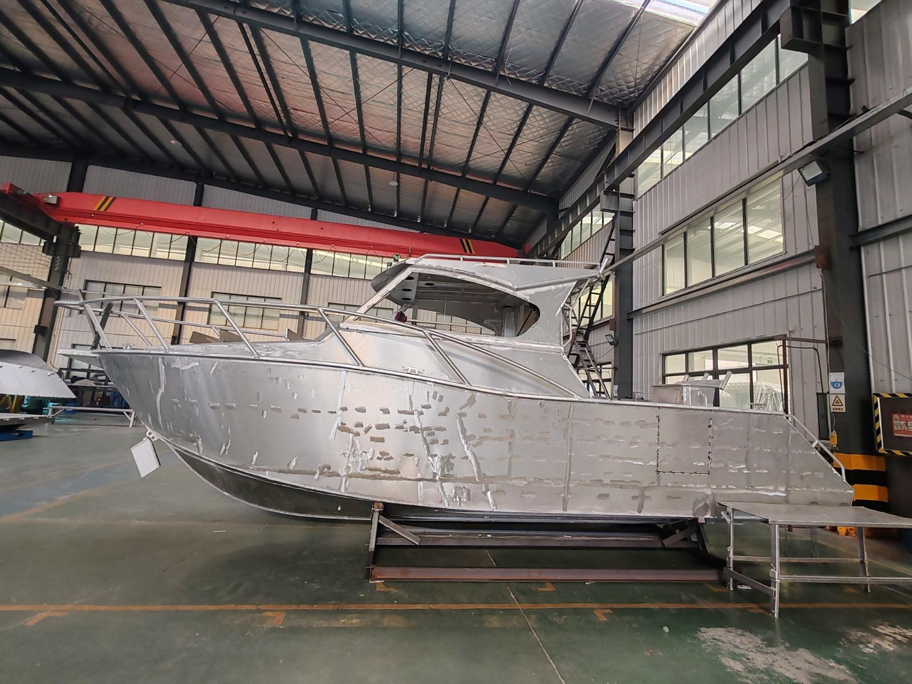
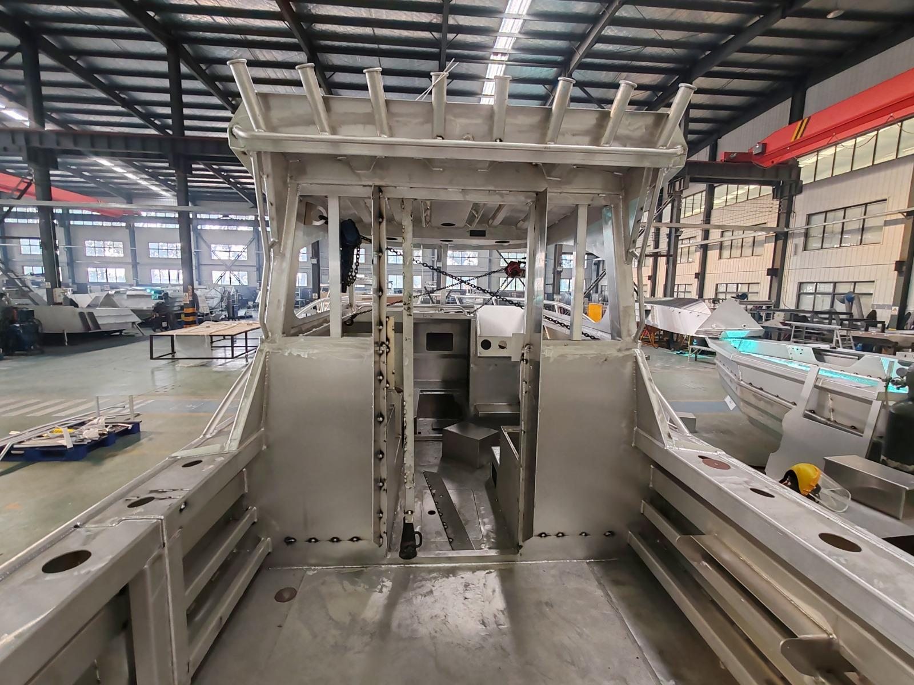
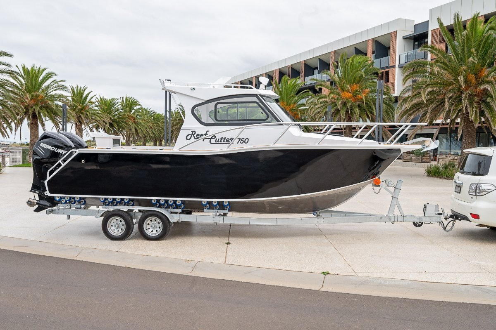
Plan yours
Fishing first, family first, diving first, or a bit of everything. The right layout starts with the honest version of how you use the water.